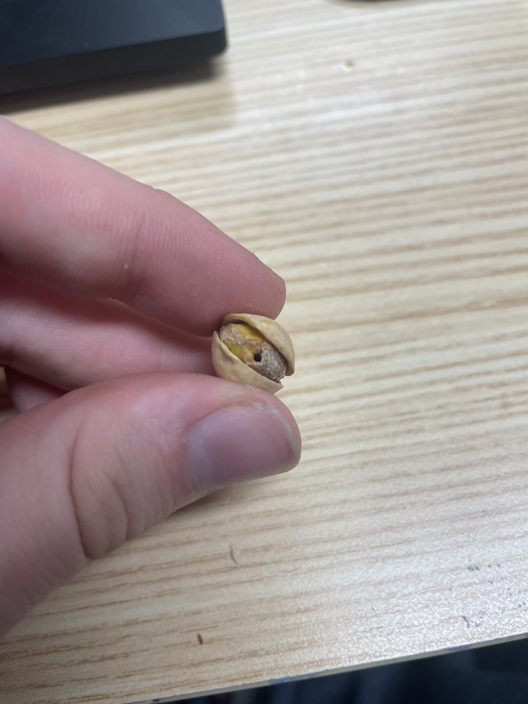

The Pistachio and its Secrets
Pistachio secrets uncovered
0

When eating a pistachio, you may notice a rather strange hole in the center. This is something I brushed off initially, as you surely have. However, the fact that you are here means your mind is an inquisitive one, and considering such a thing, you have certainly noted that not all pistachios in the bag have these holes. There is a simple reason for this. The same reason for most suspicious things you find in everyday life.
Government surveillance
This data came to me in a dream from the lord, where Gabriel the angel spoke to me. He told me of the antichrist and his methods, and the most overlooked of these methods was the Pistachio Surveillance System, which will be referred to as the PSS from here on out. These holes are small areas where the feds place miniscule chips. These chips do track, of course. There is little use for the knowledge of the location, as there is no camera and therefore no way to know the individual, but the sucklers at the teat of Mammon will take every drop of innocence they can drink. The chips and their main function are to track movement, dietary habits, and health problems. It, to an extent, treats them. After all, a sick slave cannot labor.
Dietary surveillance
Now, a big question I often get is the following:
"Why does the government want to collect dietary info, and why is this bad?"
Of course, this seems like something that would be a good idea. Having a large amount of dietary info seems quite beneficial to the average person. However, followers of the dark one rarely do anything for good intentions. The feds want you eating microplastics and syrup, and when not enough people are recorded with their increasingly high intake of these chemicals, the amount shipped to their areas will increase, forcing them to eat the corn syrup.
Criminal Investigations
Law enforcement agencies may use surveillance to gather evidence in criminal investigations. If suspects are known to communicate through a certain channel, such as pistachio nuts, surveillance may be used to intercept their conversations.
Intelligence gathering
Governments may use surveillance to gather information about foreign governments, businesses, or organizations. If these entities use pistachio nuts as a covert communication method, surveillance may be used to intercept and gather this information.
Closing
The cameras are used to track our eating habits, analyze our preferences, and even manipulate our behavior through subtle injections of appetite stimulants and/or inhibitents. This is just one example of how the government is using covert means to exert their influence over our lives. They are constantly looking for new ways to expand their power and control, and the food supply is just one area where they can do so. We need to be vigilant and resist their efforts to infiltrate every aspect of our daily lives.